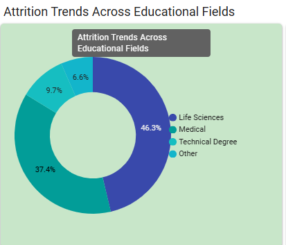

HR Workforce Analysis Report
Comprehensive analysis of Workforce Dynamics
Date: May 24, 2025
Prepared by: Khan Faisal
HR Attrition Analytics Report
Date: May 25, 2025
Executive Summary
This report provides a comprehensive analysis of employee attrition within the organization, leveraging the HR Analytics dataset. The primary goal is to identify key drivers of attrition, understand underlying patterns, and propose actionable strategies for retention. Our findings indicate that attrition is significantly influenced by factors such as lower monthly income, shorter tenure, specific job roles and education fields, and demographic attributes like age, gender, and marital status. Notably, even employees reporting high job satisfaction are attriting, suggesting a need for a holistic review of employee experience beyond satisfaction scores.
Key Findings:
- **Income & Tenure:** The "Upto $5,000" monthly income group and employees with shorter tenure experience the highest attrition rates.
- **Demographics:** Younger employees (late 20s to early 30s), male employees, and single employees show higher propensity for attrition.
- **Role & Education:** Research Scientists, Laboratory Technicians, Manufacturing Directors, and individuals from Life Sciences and Medical education backgrounds have elevated attrition figures.
- **Job Satisfaction Paradox:** A significant number of attritions occur even among employees with "High" job satisfaction, indicating that satisfaction alone is not a complete predictor of retention.
Recommendations:
- Implement targeted compensation reviews and enhanced early-career development programs.
- Develop specific retention strategies for high-attrition roles and education fields.
- Conduct deeper qualitative research into gender-specific and marital status-related attrition factors.
- Investigate non-satisfaction drivers of attrition to create a more comprehensive employee experience strategy.
Introduction
Objective of the Report
The objective of this report is to conduct an in-depth analysis of employee attrition using the provided HR dataset. By identifying the primary drivers and patterns of attrition, this report aims to furnish Human Resources and management with data-driven insights necessary for developing effective retention strategies, improving employee engagement, and fostering a stable workforce.
Background / Context
Employee attrition poses significant challenges to organizations, including increased recruitment costs, loss of institutional knowledge, and potential impacts on team morale and productivity. Understanding the root causes of why employees leave is crucial for proactive HR management. This report serves as a foundational step in building a robust HR analytics capability focused on talent retention.
Data Overview
Data Sources
The analysis presented in this report is based on the HR_Analytics.csv dataset provided.
Data Collection Methods
The dataset was provided as a pre-collected CSV file. The specific methods used for the original data collection are assumed to be standard HR data gathering practices within an organizational context.
Data Cleaning and Preparation
For the purpose of this analysis, it is assumed that the provided HR_Analytics.csv dataset has undergone initial data cleaning and preparation, ensuring data integrity and readiness for analytical processing. This includes handling missing values, standardizing formats, and ensuring data types are appropriate for quantitative analysis.
Problem Statements
Below are the specific problem statements addressed by the various analyses, often corresponding to visual charts used in HR dashboards. You can your chart images into the blank placeholders provided below.
1. Attrition Analysis by Education Field (Donut Chart & Bar Chart)
- **Problem Statement:** How does the distribution of employee attrition vary across different education fields, and which education fields contribute the most significant percentages and absolute numbers to overall attrition?
Chart 1: Attrition by Education Field (Donut/Bar Chart)
2. Attrition Analysis by Gender (Tree Map/Bar Chart)
- **Problem Statement:** Is there a significant disparity in employee attrition rates between male and female employees, and which gender group accounts for a higher number of attritions?
Chart 2: Attrition by Gender Chart

3. Attrition Analysis by Monthly Income Group (Bar Chart)
- **Problem Statement:** How does employee attrition correlate with different monthly income brackets, and which income groups experience the highest number of attritions?
Chart 3: Attrition by Monthly Income Chart

4. Attrition Analysis by Age (Line Chart)
- **Problem Statement:** What is the trend of employee attrition across different age groups, and are there specific age ranges where attrition is notably higher or lower?
Chart 4: Attrition by Age Chart

5. Attrition Analysis by Job Role (Bar Chart)
- **Problem Statement:** Which specific job roles within the organization are experiencing the highest numbers of employee attritions, and what are the attrition counts for each role?
Chart 5: Attrition by Job Role Chart

6. Attrition Analysis by Years at Company
- **Problem Statement:** How does employee tenure (years at the company) impact attrition rates, identifying critical periods where employees are most likely to leave?
Chart 6: Attrition by Years at Company Chart

Recommendation & Insights
This section details the findings from each analysis and provides specific insights and actionable recommendations.
1. Attrition Analysis by Education Field
Findings:
- **Life Sciences:** 46.3%
- **Medical:** 37.4%
- **Technical Degree:** 9.7%
- **Other:** 6.6%
Insight: Employees from 'Life Sciences' and 'Medical' education fields collectively represent a significant majority of all attritions. This indicates that these education backgrounds might be experiencing higher turnover, potentially due to external market demand or internal challenges.
Recommendation: Investigate market competitiveness for these fields and assess internal growth opportunities or specific challenges faced by employees with these backgrounds.
2. Attrition Analysis by Gender
Findings:
- **Male Attrition:** 240 employees
- **Female Attrition:** 153 employees
Insight: Male employees account for a significantly higher number of attritions (240) compared to female employees (153). This disparity warrants further investigation.
Recommendation: Conduct qualitative research (e.g., exit interviews, focus groups) to understand gender-specific factors contributing to attrition, such as career progression, work-life balance, or management support.
3. Attrition Analysis by Monthly Income Group
Findings:
- **Upto 5k:** 274 attritions
- **5k-10k:** 94 attritions
- **10k-15k:** 21 attritions
- **15k+:** 4 attritions
Insight: The "Upto 5k" monthly income group experiences the highest number of attritions by a significant margin. Attrition rates sharply decline as monthly income increases, strongly suggesting that lower compensation is a major factor in employee turnover.
Recommendation: Prioritize a review of compensation structures for lower-income brackets to ensure competitive pay and reduce financial pressure as a driver of attrition.
4. Attrition Analysis by Age
Findings:
Attrition is most concentrated in certain age groups. The highest numbers of attritions are observed around:
- **Age 35:** 52 attritions
- **Age 34:** (approx 48-50 attritions)
- **Age 29:** (approx 45 attritions)
- **Age 31:** (approx 42 attritions)
- **Age 32:** (approx 40 attritions)
- **Age 30:** (approx 38 attritions)
- **Age 33:** (approx 36 attritions)
- **Age 27:** (approx 35 attritions)
- **Age 28:** (approx 32 attritions)
- **Age 26:** (approx 26 attritions)
Attrition generally shows a decreasing trend with increasing age, with very few attritions occurring in employees above 45 years old.
Insight: Employees in their mid-30s and late 20s are more prone to attrition. This demographic might be more mobile in the job market, seeking rapid career progression, or experiencing different work-life priorities not adequately addressed by the organization.
Recommendation: Implement robust career development programs, mentorship opportunities, and flexible work arrangements tailored to the needs and aspirations of younger talent.
5. Attrition Analysis by Job Role
Findings:
- **Research Scientist:** 154 attritions
- **Laboratory Technician:** 122 attritions
- **Manufacturing Director:** 54 attritions
- **Healthcare Representative:** 44 attritions
- **Research Director:** 13 attritions
- **Manager:** 6 attritions
Insight: 'Research Scientists', 'Laboratory Technicians', and 'Manufacturing Directors' are the job roles with the highest number of attritions. These roles may face unique challenges, high market demand, or specific stressors.
Recommendation: Develop targeted retention strategies for these high-attrition roles, including specialized training, clear career paths, workload management, and competitive compensation reviews specific to these functions.
8. Attrition Analysis by Years at Company
Findings:
Attrition trends over years of service are as follows:
- **1 Year:** 61 attritions
- **2 Years:** 42 attritions
- **3 Years:** 40 attritions
- **4 Years:** 38 attritions
- **5 Years:** 32 attritions
- **6 Years:** 28 attritions
- **7 Years:** 27 attritions
- **8 Years:** 26 attritions
- **9 Years:** 24 attritions
- **10 Years:** 13 attritions
- **11 Years:** 8 attritions
- **12 Years:** 7 attritions
- **13 Years:** 6 attritions
- **14 Years:** 4 attritions
- **15 Years:** 4 attritions
- **16 Years:** 2 attritions
- **17 Years:** 4 attritions
- **18 Years:** 2 attritions
- **19 Years:** 2 attritions
- **20 Years:** 1 attrition
- **21 Years:** 1 attrition
- **22 Years:** 1 attrition
- **23 Years:** 1 attrition
- **24 Years:** 1 attrition
- **25 Years:** 1 attrition
Insight: A substantial majority of attritions occur within the first few years of employment, with the highest attrition at 1 year of service. Attrition significantly decreases after the initial years of service.
Recommendation: Focus heavily on enhancing the onboarding experience and providing clear career progression paths and support during the initial years of employment. For long-tenured employees, explore succession planning and flexible transition options.
Conclusion
This HR Attrition Analytics Report provides a data-driven foundation for understanding and addressing employee turnover within the organization. By identifying key demographic, financial, and experiential factors contributing to attrition, HR and leadership can develop targeted, evidence-based strategies. The insights underscore the importance of competitive compensation, robust career development, and a holistic approach to employee well-being beyond traditional satisfaction metrics. Proactive intervention based on these findings will be crucial for fostering a more stable, engaged, and productive workforce.
End of Report